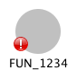

The Function Call Graph Plugin is a simple graph display that shows incoming and outgoing calls (as edges) for the function containing the current address, also known as the Source Function, in the Listing. This display provides some context for how a function is used within the program. The functions are organized by Level.
To show the Function Call Graph provider window,
select the Window Function Call Graph option on the tool menu.
Function Call Graph option on the tool menu.
The graph of function calls related to the source function being displayed can be explored by adding existing function calls to the initial graph display.
The graph updates itself as you navigate within the tool. To prevent losing graph state (e.g., expanded functions, node locations, etc), a small number of graphs will be cached. For example, if you navigate away from a function and then immediately return, the graph will be restored to its previous state.
Terms
- Source Function: the function that contains the current address in the Listing. This function is considered the center of the graph, with all other callers/callees added to the graph at a new level.
- Level: Each function node in the graph belongs to a level. The source function is at level 1; the source function's incoming calls are at level 2; the source function's outgoing calls are also at level 2. Organizing functions by level allows the user to quickly see how many hops, or calls, a given function is from the source function.
New levels of calls can be added to the graph by the user.
- Direction: Each function node, other than the source function, is considered to be in one of two directions: In or Out. All function nodes in a given level share the same direction. So, all nodes that directly call the source function node are considered to be the In direction; all nodes directly called by the source function are considered to be the Out direction.
When a given node's level is expanded in the graph, the nodes added are based upon the selected node's direction: for In nodes, the newly added nodes will be those nodes that call the selected node; for Out nodes, the newly added nodes will be those nodes called by the selected node.
- Direct Edges: An edge (a call) between two adjacent levels.
- Indirect Edges: An edge (a call) between two non-adjacent levels or an edge within the same level. These edges are rendered with less emphasis than direct edges.
Actions
Show/Hide Edges Action
Within the Function Call Graph you can show and hide function calls as desired. Showing additional function calls can be accomplished multiple ways. From any function node, you can select the Expand icon (
), which appears on a node when hovered. When clicked, this button will toggle related function calls: showing them if not already in the graph; hiding them if they are in the graph.
Additionally, these same functionality is provided from the popup menu actions (i.e., Show/Hide Incoming Edges and Show/Hide Outgoing Edges).
As new vertices are added to the graph, any indirect edges will be added to the graph.
Note here how new vertices may appear in odd places when expanding (such as when they are already in the graph at a previous level).
It is important to understand that the graph is only a subset of the entire program graph. This graph does not represent all functions and function calls in the program.

Show/Hide Level Edges Action
All functions that relate to the Level of the selected function will be shown, not just calls to the selected function.
Navigate on Incoming Location Changes
This action (
), when toggled on, upon receiving Program Location changes from the tool, will graph the function containing that location. When toggled off, location changes will not affect the graph.
Having this action on is useful if you wish to quickly see the graph of different functions as you navigate the program. Alternatively, having this action off is useful when you wish to explore the program by navigating from within the graph, say by double-clicking function nodes in the graph.
Layout Action
This action (
) will relayout the current graph and reset the graph to show only the initial nodes.
Graph 'Function Name'
This action is available from the popup menu of any node that is not the currently graphed node. When pressed, this action will graph the clicked function.
Satellite View
The Satellite View works exactly as the Function Graph's Satellite View.